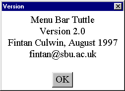

The appearance of the versionDialog for this applet is shown in Figure 6.8. It is posted onto the desktop, in a non-modal manner, when the Version… item on the Help menu is activated and is un-posted from the desktop when its OK button is pressed.

Figure 6.8 The MenuBarTuttle version dialog.
The VersionDialog class is essentially identical to the ExitDialog containing a constructor which assembles the dialog but does not display it, a setVisible() method which posts it onto the desktop centred within the applet's Frame window and an actionPerformed() method which is called as a consequence of the "OK" button being pressed and un-posts the dialog. The implementation of the class is given in Appendix B. The VersionDialog's constructor is called from the MenuBarTuttle's init() method as follows.
0066 versionDialog = new VersionDialog( tuttleFrame, this.getAppletInfo());
The first argument to the constructor is the Frame which the dialog is to be associated with. The second is the String which the versionDialog is to display in its MessageCanvas component; this argument is specified as the String returned from the MenuBarTuttle's getAppletInfo() method, implemented as follows.
0162 public String getAppletInfo() {
0163 return "Menu Bar Tuttle\nVersion 2.0\n " +
0164 "Fintan Culwin, August 1997\n" +
0165 "fintan@sbu.ac.uk";
0166 } // End getAppletInfo.
The getAppletInfo() method is intended to be used by the developer to allow a client of the applet, for example an appletviewer utility, to obtain a String which provides some information about the version, and any other details that seem appropriate. It is being used here only to supply the contents of the versionDialog. VersionDialogs are customarily more complex than this and many use animated images to draw attention to the prowess of the development team.